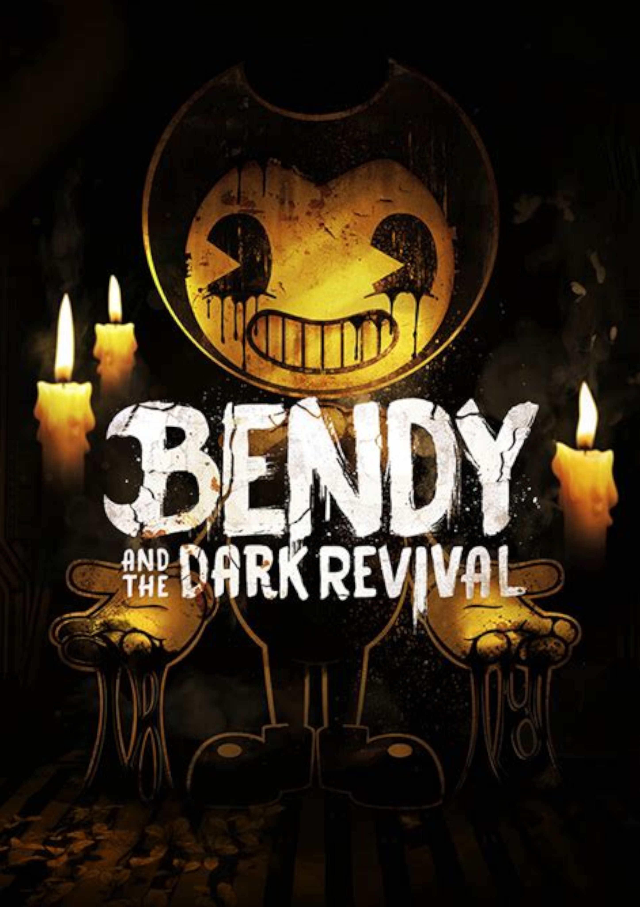
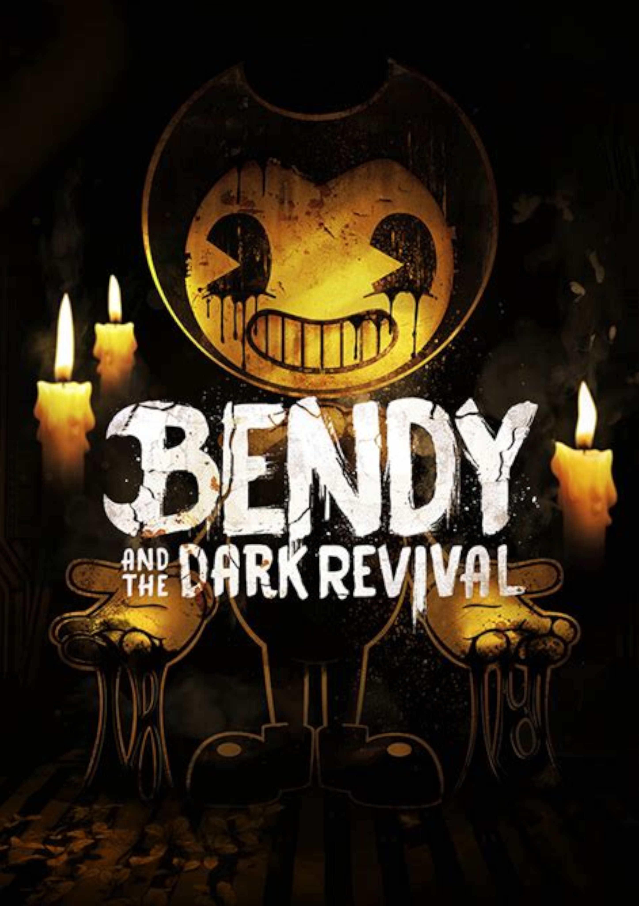
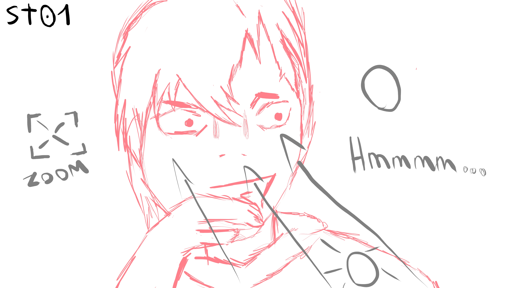

CANNARD Naël

Étudiant en
Administration des systèmes et réseaux(BTS SIO)
au lycée Louis‑Pergaud de Besançon,
je m'adonne à des expériences professionnelles
ainsi qu'a ma passion
pour l'informatique et le multimédia.
Aspirant à vivre des environnements connectés, Je
veille aux
évolutions technologiques et me certifie
pour enrichir mon parcours dans le domaine du numérique. Bonne visite! :)
-------------------------------------------------------------
-------------------------------------------------------------
Dans le cadre de mes études en baccalauréat professionnel, j’ai eu la chance de pouvoir développer des compétences en entreprise, via des stages rémunérés.
Laboratoire ThéMA: 1 mois et demi de stage.
-------------------------------------------------------------
Bien que j'aie découvert l'informatique via le multimédia, j'ai rapidement pris goût au bidouillage grâce à Linux :
configurer son compositeur, personnaliser son interface, chercher à optimiser au maximum son installation, etc.
Et puis, configurer son serveur audio, pour boucler avec le multimédia.
Par la suite,
j'ai débuté en infrastructure réseau dans le cadre de mon bac pro SN RISC et rencontré des personnes qui
m'ont permis de réaliser que le réseau et l'électronique, en dehors de ma future vie professionnelle,
vont jouer un grand rôle dans ma vie personnelle. Automatiser des choses, c'est cool.
Je pense avoir une attache pour le multimédia simplement parce que j'apprécie l'art.
D'abord en tant que spectateur, bien que je ne me considère pas comme un homme de culture.
Ensuite, en tant que petit créateur. Mais tout d'abord, lorsque je parle de multimédia,
je me cantonne à quelques types de médias : la vidéo, l'image, la musique (le seul dans lequel je n'ai jamais été créateur),
le digital art, et occasionellement le jeux-video. J'aime dessiner sur ma tablette graphique, tester de petites animations,
éditer des vidéos, enregistrer avec OBS, monter des images afin de créer un fond d'écran, etc.
Mes références préférées sont : 【Oshi no Ko】, 橘麻美, ou encore Bendy (BATIM, BATDR, etc.).
 

-------------------------------------------------------------
Le seul de mes projets réellement en cours est un projet de chaîne YouTube d'animation qui aurait pour but de vulgariser des sujets d'informatique, voire de raconter ma progression dans certains projets, comme la création de mon propre matériel de création audio, ou d'un moteur de recherche auto-hébergé. J'ai déjà deux vidéos en préparation, cependant elles sont toutes les deux des prototypes, des vidéos d'essai pour tâter le terrain.
Pour gagner du temps lors de la création de ces vidéos, il est important d'adapter mon compositeur de fenêtres et mon software à chacune de mes utilisations. Comme par exemple, la configuration du menu Kando pour l'usage de ma tablette graphique,

un chibi pré-anime dans OBS, ou encore un base-project de mon logiciel de montage pour que mes assets soient toujours prêts à l'emploi lors de la création de chacune des vidéos à venir.
-------------------------------------------------------------
-------------------------------------------------------------
{kind=link}